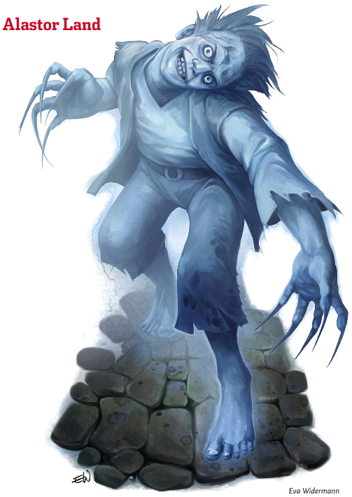

Week 3 - The missing pieces found, a barrier, and a new quest.
Tom the half-ogre impetuously plunges down the stairs into the water, immediately drawing the attention of a small water elemental, which attacks him. Tom fights, but is at a considerable disadvantage. Not only is a creature of this nature effectively concealed when in its native element, but Tom has dreadful eyesight. The fight is a gamble which Tom is losing: for any of Tom's massive blows will scatter the thing, but first he has to connect; whereas the elemental's lesser blows are connecting on a regular basis. Firth temporarily distracts the elemental with a small illusion in a location which he actually does not have line of effect to, but magic being the quirky and unpredictable thing it is the illusion works and the elemental goes to investigate.
The party retreats somewhat up the stairs, but the elemental immediately returns. This time, the water not being as deep, the elemental has to extend up out of the water to attack. Without its concealment, the party defeats it handily.
Tom and Frith volunteer to swim down and investigate the underwater room with Tom's darkvision and the illumination from a light spell. The room turns out to be a shower block, with two locker rooms. They investigate one of the old locker rooms and are immediately confronted by a ghoul. A brief battle ensues. Frith attempts to turn the ghoul, but his censure lacks authority. He attempts again, with much the same result. The half-ogre threrefore deals with the ghoul the old-fashioned way.
The chamber has a few coins in one of the lockers, the only point of note being the ring on the ghoul's finger, which bears a compass rose in the style of that on the armour of the old corpse in the beetle room. The ring is of considerable value to the right collector, but perhaps may be of even more value by way of its utility if it were kept.>
The other locker room contains nothing but another corpse in red leather armour bearing a compass rose, who holds a red lantern in the style of the lanterns in the star-shaped room and sports a shiny short sword belted to his waist.
Tom and Frith exit the water bearing their prizes, and the party elect to clean out the beetle room.
This time, Frith steps forward and announces that he will go into the room and search it alone, The party react with horror. "No!", they say , "Don't do it!". (well, no: this didn't actually happen, but anyway). Frith explains that he is neither foolish nor suicidal, but will explore the room warded by The Twelve, under the protection of a spell of Sanctuary. This being Eberron where arcane magic is common but divine magic rare, the rest of the party are struck with an almost superstitious awe and leave him to it.
The cleric strides boldly forth into the nest room (for that is what it is), with a heroic rope tied around his waist so that the party can yank him out of there. He is confronted by the acid beetle brood sow and a swarm of young acid beetles. He notices, however, three oblong-shaped hummocks toward the back of the room. The beetles move to attack. The sow finds that she is unable to bring herself to actually strike at Frith, owing to the protection of his nature-boy devotion to the gods. The swarm, however, is not so easily dissuaded from a source of fresh meat and swarms Frith - biting and secreting their acid. The party yanks Frith back, and the sow and swarm follow to press the attack. Tom deals with the sow easily enough, but the swarm is another matter. A pint of oil, however, and a spark from an unspecified source take care of things.
The oblong-shaped hummocks turn out to be three more bodies with the now-familiar red leather and compass rose crest. Flash casts a spell for the detection of magical auras and finds - in the beetle nest - a plain and slight silver ring. The font along the back wall also emits a strong aura of conjuration , although the vomit-looking mass in the font seems nonmagical. The party take a sample. Concluding that these chambers are looted enough, the party elects to return to town with their finds.
Back at the ranch, Allustan the sage has news. The strange glyphs on various items and fixtures around the cairn seem to be personal sigils of various persons, and not only that, they seem to be written in what some scholars believe to be the original written form of Auran (which now uses the draconic alphabet). If true, then the cairn is ancient incdeed. The party concludes that the strange humanoid figures carved into the cairn might have been some ancient race connected with Syrania, the Azure Sky. There may perhaps be more to glean from the carvings, but Allustan at this stage has nothing further.
Using the survival techniques of the Rangers, intoning the mystical phrase "Crikey! Just get a load of this litle beaudy!", Frith determines that the vomit-like substance from the font in the beetle room is harmless and in fact nutritious, tasting a little like gravy. The party adds two and two and gets four, concluding that the area with the mess room, the bunks, and the shower block were labourers chambers; and that therefore surely the chambers with the bedroom and workshop belonged to someone of higher status.
Flash investigates the plain but magical silver ring. Allustan explains that he would be happy to identify it, but the spell requires a pearl of considerable size and value. Using his skills with magical devices, therefore, Flash concludes that the ring is activated by the wearer falling more than a few feet. It is, quite obviously, a Ring of Feather Falling - such items being not uncommon in Eberron so near to the great city of Towers. On the theory "the bigger they are, the harder they fall", the party give the ring to Tom to wear.
Next day (or perhaps next week , as some of the party have jobs), our heroes return. Making use of his wand of Unseen Servant, Flash has the two lanterns recovered by the party attached to the chains in the star-shaped room and all the lanterns lit. The room is illuminated in a glittering rainbow-coulored glow, but nothing seems to happen. They pivot the sarcophagus around the room, but still nothing seems to happen. Acting on an mysterious hunch, the party goes down and investigates each arm of the room in turn in person. Down the blue arm, someone finally spots that the ceiling here is not like that of the other arms (what's the point of a campaign where it all hinges on a single bloody spot check?), but extends upward further than the range of torchlight. Tom shins up the chain holding the lantern, and determines that there is an passage high up in the wall, opening onto a corridor.
The floor of the corridor is scored with deep gouges, as if someone was dragged along it. At the end of the corridor is a wall carved with a face with a wide open mouth. As they approach the carving nothing happens, and Flash investigates thoroughly eventually determining that the trap - for trap it is - is not active.
Beyond the face is a strange 50 foot corridor, with a balance beam running down the centre and a lowered floor covered with iron balls the size of oranges. At the end of the corridor are a pair of plain steel doors. The area is so obviously some sort of trap that the party falls to discussing what to do. Flash sends his invisible servant down the balance beam, and iron balls begin pelting out of the wall at considerable force fit to knock a person off a balance beam. Lord knows what happens to anyone knocked into the pit of iron balls below!
The party stand there hashing over what to do for so long that a mysterious voice from nowhere says "Wow! You guys take ages - way longer than all the other adventurers!"
Now ... at some point someone did run the gauntlet and made their reflex save, but I forget the circumstance. I think flash wedged the beam at one point, disabling the trap. At any rate, eventually Flash got down to the end of the coirridor and reached the iron doors. He did not touch them, but got close enough that Allastor Land decided that getting that close counted as having made it past the trap, and so manifested.
Flash reaches the door at the end of the balance beam, and a ghost of a teenage boy manifests - with broken neck, claws for fingernails, and wildly staring eyes. The sight of the terrible ghost magically debilitates Flash, and it attempts to posess him. Flash's will, however, is strong enough to resist the influence and so the ghost floats down the corridor toward Tom. Tom swipes at the ghost once, twice. The blows pass hamlessly through the ghost on account of his wepon not being magical (doh, I knew I forgot something), but Allastor decides that this group is strong enough that they might be able to help him with his predicament.
Alastor tells the party his sad story, how he ran off and got himself killed in this very corridor, how his family died of the Red Plague and he was cursed for having abandoned them. The doors, he says, are impenetrable - only openable from inside. If the party will return his bones to lie beside the bones of his family in his family graveyard, as his last act he will operate the mechanism inside that opens the doors.
The party recover the bones with that very handy invisible servant, avoiding the odd tentacled monster that Alastor tells them is hiding in the iron balls on the floor of the chamber. They attempt to negotiate with Alastor to get him to open the doors first ... but he simply fades away as is a ghost's wont.
And so the party return to town, to inter the bones at the Land family plot.
Next day, the party head to the Land farmstead and - shit - the place has been hit by graverobbers. Fresh piles of dirt, a pair of abandoned shovels, and five dug-up graves mark the scene. Wheelbarrow marks head off in the direction of town. Since Alastor's deal is that he be buried a) in his family graveyard and b) next to the bones of his family, the party has something of a problem. Not being skilled trackers, the party can divine nothing more from the scene.
They debate what to do. They visit the Diamond Lake boneyard. A cult of The Keeper guard this place, the town cemetery. They are suitably grim, but not terribly surprised. Such sacrilege is not rare, hence their own warding of the public graveyard - protecting it against the town, and the town against it. The bones of the dead are used as components in certain spells and potions, they can be animated with certain dark magics as undead servants, and some total, total bastards just use 'em for decoration.
Firth makes contact with a couple of ranger mates, who I really ought to do NPC stats for. They have a close look at the scene around the graveyard. To the more skilled eye, what the party missed becomes obvious. The graves were robbed by five humanoids who then proceeded on toward the farmhouse. Five sets of tracks lead to the farmhouse, but only four return - and those four at a dead run.
Will the party continue on? What waits in the farmhouse? Where lie the bones of Alastor's family, and for what sinister purpose were they taken? And most of all: what's in the room behind the featureless steel doors, so excessively guarded by traps that a 1st-level party can negotiate? Stay tuned! It just gets better and better!